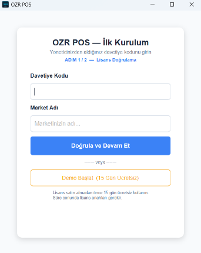
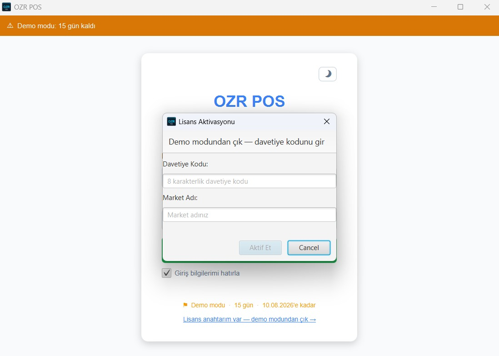
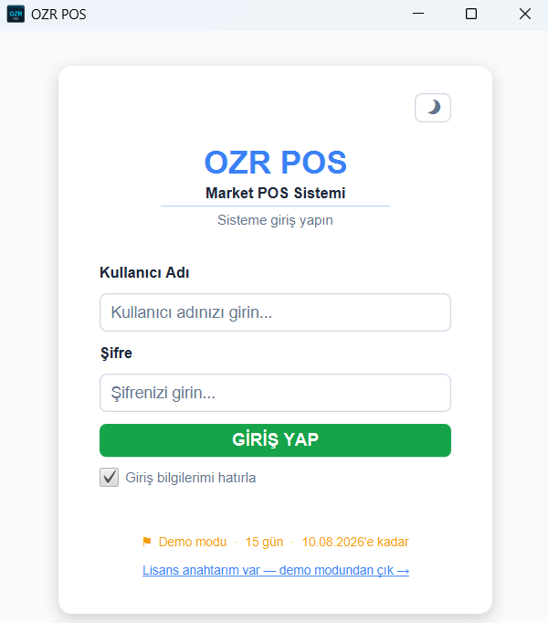
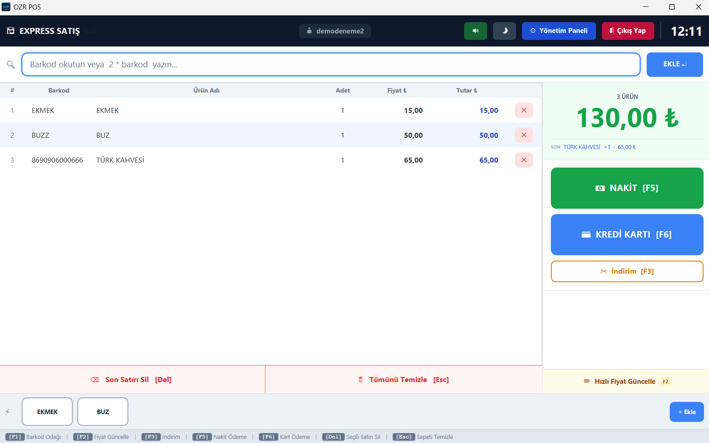
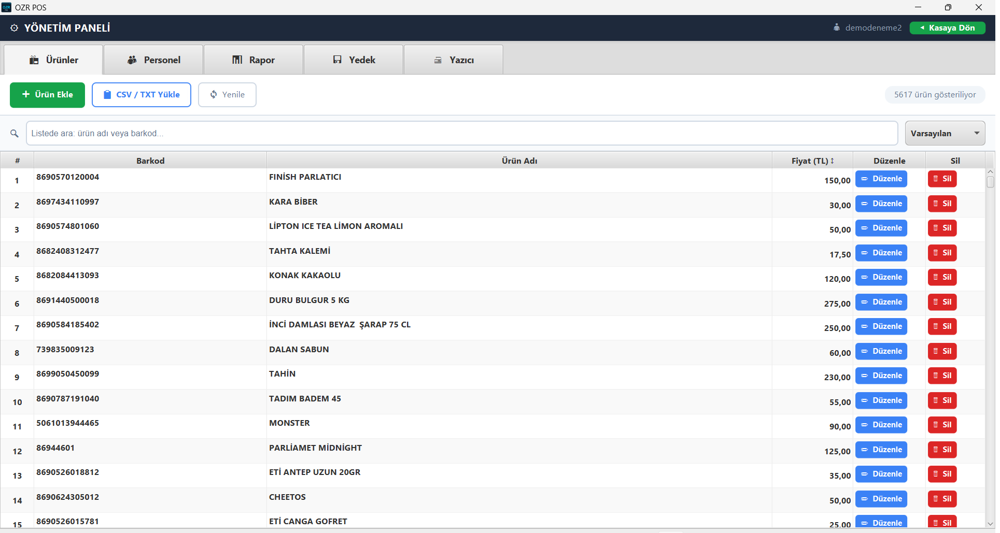
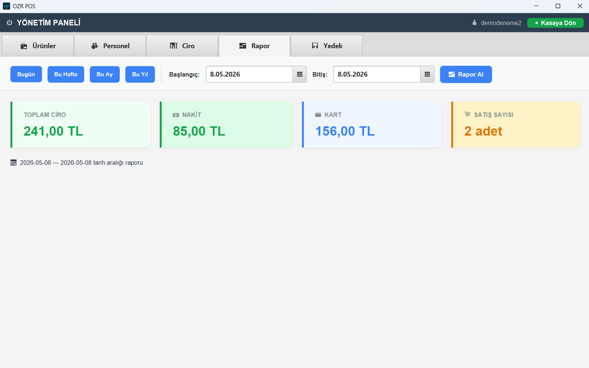
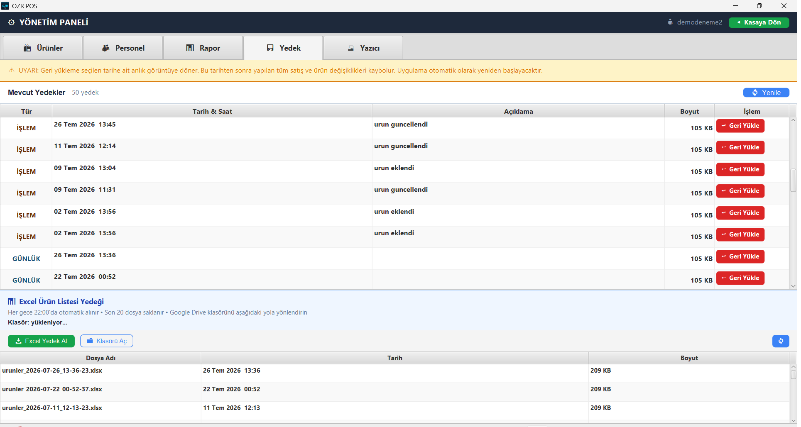

1 Kurulum
OZR POS, Windows 10 ve 11'de çalışır. Güçlü bir bilgisayar gerekmez; yaklaşık 400 MB boş disk alanı ve 4 GB RAM yeterlidir.
- İndirme sayfasından en son sürümü indirin (
OZRPos-vX.Y.Z.zip). - ZIP dosyasına sağ tıklayıp "Tümünü ayıkla" deyin. Çıkan
OZRPosklasörünü kalıcı bir yere koyun, örneğinC:\OZRPos. - Klasördeki
OZRPos.exe'ye çift tıklayın. Masaüstüne kısayol oluşturmanızı öneririz.
⚠ "Program Files" klasörüne kurmayın. Program kendini güncellerken kendi klasörüne yazar. Windows bu klasörde yazma izni vermediği için güncelleme yapılamaz.
💡 Windows ilk açılışta "Windows bilgisayarınızı korudu" diyebilir. Bu, yeni yayıncılara gösterilen standart bir uyarıdır: Ek bilgi → Yine de çalıştır deyin. Her sürümün SHA-256 doğrulama özeti indirme sayfasında açıkça yayınlanır.
2 İlk açılış: demo ve lisans
İlk açılışta iki seçenek görürsünüz:
- Davetiye kodunuz varsa: 8 karakterlik kodu girin, market adınızı ve yönetici hesabınızı oluşturun.
- Kodunuz yoksa: "Demo Başlat (15 Gün Ücretsiz)" deyin. Kart bilgisi istenmez.

İlk kurulum ekranı
Demo süresince tüm özellikler sınırsız çalışır. Kalan gün sayısı her girişte ekranın üstünde görünür.
Demodan lisansa geçiş
Programı beğendiğinizde WhatsApp'tan bize yazın, size özel davetiye kodunuzu iletelim. Kodu lisans ekranına girdiğinizde tüm ürünleriniz, satışlarınız ve ayarlarınız aynen kalır; kaldığınız yerden devam edersiniz.

Davetiye kodu ile lisansa geçiş
3 Giriş ve kullanıcılar
Programda iki tür kullanıcı vardır:
👑 Yönetici (siz)
- Kasada satış yapar
- Yönetim Paneli'ne girer: ürünler, personel, veresiye, rapor, yedek, yazıcı
- Kasiyer ekler ve kaldırır
🧑💼 Kasiyer
- Kasada satış yapar
- Veresiye satış ve tahsilat yapabilir
- Yönetim Paneli'ni göremez
Kasiyer eklemek
Yönetim Paneli → 👥 Personel → ➕ Kasiyer Ekle. Her kasiyere ayrı kullanıcı adı ve şifre verin. İşten ayrılan kasiyeri 🗑 Kaldır ile kapatabilirsiniz; hesabı girişe kapanır ama yaptığı satışlar kayıtlarda kalır.
Kendi şifrenizi değiştirmek için: Personel → 🔑 Şifremi Değiştir.
"Giriş bilgilerimi hatırla"
Bu kutu işaretliyken kullanıcı adınız ve şifreniz bir sonraki açılışta hazır gelir. Kasiyerlerin de kullandığı bir bilgisayarda yönetici olarak girerken işareti kaldırın. İşareti kaldırdığınız anda kayıtlı bilgi silinir.

Giriş ekranı
4 Kasa ekranında satış

Kasa ekranı
Ürün eklemek
- Barkodu okutun. Ürün anında sepete düşer, toplam kendiliğinden güncellenir.
- Birden çok adet: barkod alanına
3*yazıp barkodu okutun. 3 adet birden eklenir. - Barkodu okunmuyor mu? F7 ile ürünü adıyla arayın (ör. "ülker çikolata") ve sepete ekleyin.
- Adet değiştirmek: sepetteki satıra çift tıklayın.
- Satır silmek: Del seçili satırı siler. Seçili satır yoksa son ekleneni siler.
- Sepeti boşaltmak: Esc. Yanlışlıkla silinmesin diye onay sorulur.
Ödeme almak
- Nakit: F5 nakit penceresini açar. Müşterinin verdiği tutarı yazın; para üstü anında hesaplanır, Enter ile bitirin. Müşteri tam para verdiyse bir şey yazmadan F5 F5 ile satışı kapatın.
- Kart: F6.
- Veresiye: F9. Ayrıntılar Veresiye defteri bölümünde.
İndirim ve fiyat işlemleri
- F3 İndirim: sepete tutar (₺) veya yüzde (%) olarak indirim uygulayın.
- F8 Fiyat Sor: müşteri "bu kaç para?" diye sorduğunda ürünü okutun. Fiyat görünür, sepete eklenmez.
- F2 Hızlı Fiyat Güncelleme: raftaki fiyat değiştiyse ürünü okutup yeni fiyatı oradan kaydedin. Yönetim paneline girmeniz gerekmez.
Kayıtlı olmayan barkodlar
Sistemde olmayan bir barkod okutulursa uyarı sesi çıkar ve barkod ⚠ Bulunamayan listesine yazılır. Gün içinde biriken bu barkodları üst çubuktaki butondan saatleriyle birlikte görür, ardından Ürünler sekmesinden tanımlarsınız. Hiçbir eksik ürün gözden kaçmaz.
Üst çubuk
Sağ üstte ses (🔊/🔇), açık/koyu tema (☀/🌙) düğmeleri ve bağlantı göstergesi bulunur. Gösterge kırmızıysa internet yoktur, ama satış yapmaya devam edebilirsiniz.
5 Klavye kısayolları
Kasada fareye hiç dokunmadan çalışabilirsiniz. Bu tabloyu yazdırıp kasanın yanına asabilirsiniz.
| Tuş | İşlev |
|---|---|
| F1 | Barkod alanına dön (okuyucu okumuyorsa önce buna basın) |
| F2 | Hızlı fiyat güncelleme |
| F3 | İndirim uygula (₺ veya %) |
| F4 | Tüm hızlı ürünleri göster |
| F5 | Nakit ödeme (F5 F5 = tam para ile hızlı kapanış) |
| F6 | Kredi kartı ile ödeme |
| F7 | Ürünü isimle ara |
| F8 | Fiyat sor (sepete eklemeden) |
| F9 | Veresiye: deftere yaz veya borç ödemesi al |
| Ctrl + 1 / 2 / 3 | Kasa 1 / 2 / 3 sepetine geç |
| Del | Seçili satırı (yoksa son satırı) sil |
| Esc | Sepeti temizle (onay sorar) · açık pencereyi kapat |
3* + barkod | Ürünü 3 adet ekle (istediğiniz sayıyı yazın) |
6 Çoklu sepet
Kasada aynı anda 3 ayrı sepet açık tutabilirsiniz. Örneğin müşteri "bir şey unuttum" deyip rafa döndü: Ctrl+2 ile ikinci sepete geçip sıradaki müşteriye satış yapın. İlk müşteri döndüğünde Ctrl+1 ile sepeti kaldığı yerden açın.
Kasa 1 / 2 / 3 düğmelerine tıklayarak fareyle de geçiş yapabilirsiniz.
7 Hızlı ürün tuşları
Ekmek, buz, poşet, simit gibi barkodsuz veya sık satılan ürünler için kasada tek tıkla eklenen tuşlar tanımlayın.
- Eklemek: hızlı ürünler alanındaki + Ekle düğmesi. Barkodu olmayan ürüne kendiniz benzersiz bir kod verin (ör.
BUZ001) ve kısa bir düğme adı yazın. - Düzenlemek veya kaldırmak: tuşa sağ tıklayın.
- Sırayı değiştirmek: tuşu sürükleyip istediğiniz yere bırakın.
- Hepsini görmek: F4 veya ⤢ Tümü.
8 Veresiye defteri
Mahalle müşterinizin borcunu kağıt deftere yazmanıza gerek yok. OZR POS borcu satışla birlikte kaydeder, fişe yazar ve defteri kendi kendine yedekler.
Veresiye satış (deftere yazma)
- Ürünleri her zamanki gibi sepete ekleyin.
- F9'a basın. Müşteriyi adından veya telefonundan arayıp seçin.
- Onaylayın. Sepet müşterinin defterine yazılır.
Müşteri listede yoksa aynı pencereden ➕ Yeni Müşteri ile hemen ekleyin. Ad dışındaki bilgiler (telefon, not, borç limiti) isteğe bağlıdır. Kağıt defterden geçiyorsanız müşterinin mevcut borcunu eklerken girebilirsiniz.
Borç ödemesi almak (tahsilat)
- F9 → müşteriyi seçin → 💰 Ödeme Al.
- Alınan tutarı yazın veya borcun tamamı için Tümünü Öde'ye basın. Ödemenin nakit mi kart mı olduğunu seçin.
- Onay penceresinde tutarı kontrol edip onaylayın.
✓ Tutar alanı bilerek boş gelir ve her ödeme bir onay penceresinden geçer. Yanlışlıkla ödeme kaydedilmez.
Fiş ve makbuz
Veresiye fişinde müşterinin adı, önceki borcu, bu alışveriş ve toplam borcu yazar. Müşteri ne kadar borcu olduğunu her alışverişte görür, tartışma çıkmaz. Ödeme alındığında ise önceki borç, ödenen tutar ve kalan borcu gösteren ayrı bir ödeme makbuzu basılabilir.
Borç limiti
Her müşteriye isteğe bağlı bir borç limiti koyabilirsiniz (boş bırakılırsa limitsiz). Limit aşılacaksa program kırmızı uyarıyla onay ister. Satış engellenmez, karar sizindir.
Hesap dökümü ve Yönetim → 📒 Veresiye
Müşteri penceresindeki 📜 Hesap Dökümü o müşterinin tüm alışveriş ve ödemelerini tarih sırasıyla gösterir. Yönetim Paneli'ndeki 📒 Veresiye sekmesinde ise tüm müşterileri ve güncel borçlarını tek ekranda görürsünüz.
Kim ne yapabilir?
🧑💼 Kasiyer
- Veresiye satış
- Borç ödemesi alma
- Yeni müşteri ekleme
👑 Yalnızca yönetici
- Borç düzeltme (açıklamalı, ör. iade)
- Limit belirleme, müşteri düzenleme
- Müşteriyi pasife alma
- Excel'den defter yükleme
Defteriniz kaybolmaz
Veresiye kayıtları şifreli veritabanında tutulur ve her değişiklikten sonra yedeklenir. Ayrıca okunabilir bir Excel defteri (veresiye_defteri.xlsx) olarak Excel yedek klasörünüzdeki veresiye klasörüne yazılır. Son 60 günün günlük kopyaları da saklanır.
- 📤 Excel'e Aktar: defteri istediğiniz an Excel'e yazar.
- 📂 Excel Klasörü: defterin bulunduğu klasörü açar.
- 📥 Excel'den Yükle: yeni bir bilgisayara geçtiğinizde defteri bu Excel dosyasından geri getirir. Mevcut kayıtların üstüne yazılmasın diye yalnızca defter boşken çalışır.
9 Ürünler ve toplu yükleme

Yönetim Paneli → Ürünler
Tek tek ürün eklemek
Yönetim Paneli → 📦 Ürünler → ➕ Ürün Ekle. Barkodu okutun, ürün adını ve satış fiyatını yazın. Listede ürün adı veya barkodla arayabilir, ürünleri ✏ Düzenle ve 🗑 Sil ile yönetebilirsiniz.
Excel / CSV listesinden toplu yükleme
Eski programınızdan veya toptancınızdan aldığınız ürün listesini tek seferde yükleyebilirsiniz: 📋 CSV / TXT Yükle.
- Excel'de dosyayı "CSV UTF-8 (virgülle ayrılmış)" olarak kaydedin. Noktalı virgül (;) ve virgül (,) ayraçlarının ikisi de desteklenir.
- İlk satır başlık olmalıdır. Program Barkod, Ürün Adı ve Fiyat sütunlarını başlık adından kendisi bulur. "Satış Fiyatı" ile "Alış Fiyatı" yan yanaysa satış fiyatını seçer.
- Başlıklar tanınmazsa sıralama
Barkod;İsim;Fiyatkabul edilir. - Bir dosyada en fazla 10.000 ürün yüklenir. Daha büyük listeleri parçalara bölün.
| Barkod | Ürün Adı | Fiyat |
|---|---|---|
| 8690000000017 | Su 0,5 L | 10,00 |
| 8690000000024 | Ekmek | 12,50 |
Örnek dosya düzeni
✓ Yüklenen listedeki bir barkod sistemde farklı ad veya fiyatla zaten varsa, ya da aynı dosyada aynı barkod iki farklı şekilde geçiyorsa program her birini size tek tek sorar. Hiçbir ürün habersizce ezilmez.
10 Raporlar

Yönetim Paneli → Rapor
Yönetim Paneli → 📊 Rapor sekmesinde Bugün, Bu Hafta, Bu Ay, Bu Yıl ve Tüm Zamanlar düğmeleriyle tek tıkla rapor alın. Başka bir tarih aralığı için başlangıç ve bitiş tarihini seçip 📈 Rapor Al'a basın.
Raporda şunları görürsünüz:
- Toplam ciro, nakit ve kart ayrımı, satış sayısı
- Veresiye satış (ciroya dahildir ama kasaya girmemiştir) ve veresiye tahsilat tutarları
- Şu anki toplam açık veresiye, yani müşterilerin size toplam borcu
11 Fiş yazıcı ve market adı
OZR POS, Windows'a kurulu ESC/POS uyumlu termal fiş yazıcılarla çalışır.
- Yönetim Paneli → 🖨 Yazıcı sekmesini açın.
- Listeden yazıcınızı seçin (görünmüyorsa ↻ Yenile) ve "Fiş yazdırmayı etkinleştir" kutusunu işaretleyin.
- Fiş başlığına market adınızı, isterseniz adres ve telefonunuzu yazın. Fişte ürün adı ve kasiyer adı görünsün mü seçin, alt mesajınızı ekleyin (ör. "Yine bekleriz").
- 💾 Kaydet, ardından 🖨 Test Fişi Bas.
⚖ OZR POS'un yazdırdığı fiş bilgi fişidir, mali belge değildir. Yasal zorunluluk olan mali onaylı yazarkasanızı (ÖKC) kullanmaya devam edin.
12 Yedekleme ve geri yükleme

Yönetim Paneli → Yedek
Yedeklemeyi hatırlamanız gerekmez, program kendisi yapar:
- Günlük yedek: tüm veritabanının her gün bir şifreli yedeği alınır. Bilgisayar gece kapalı veya uykudaysa, açıldığında telafi edilir. Son 30 günün yedeği saklanır.
- İşlem yedeği: ürün ekleme, silme, fiyat değişikliği, toplu yükleme ve veresiye işlemlerinden hemen sonra ek bir yedek alınır.
- Excel ürün listesi: ürün listeniz her gün okunabilir bir Excel dosyası olarak da kaydedilir. 📥 Excel Yedek Al ile istediğiniz an alabilir, 📁 Klasörü Aç ile görebilirsiniz.
Yedekler AES-256 ile şifrelidir. Bilgisayarınızı başkası alsa bile yedek dosyaları açılamaz.
Yedekten geri dönmek
- Yönetim Paneli → 💾 Yedek sekmesinde listeden dönmek istediğiniz tarihteki yedeği seçin.
- ↩ Geri Yükle'ye basıp onaylayın. Program kapanır.
- Programı yeniden açın. Geri yükleme açılışta tamamlanır.
💡 Geri yükleme başlamadan önce mevcut veriniz ayrıca saklanır. İşlem yarıda kalırsa (örneğin elektrik kesilirse) program bir sonraki açılışta verinizi eski haline döndürür.
⚠ Yedek ZIP dosyalarını Windows'ta çift tıklayarak açmaya çalışırsanız "geçersiz" uyarısı alırsınız. Bu normaldir: dosyalar şifrelidir ve yalnızca OZR POS açabilir.
Bilgisayar değiştirirken
Yeni bilgisayara geçişte verilerinizin taşınması için bize WhatsApp'tan yazın, birlikte yapalım. Yedeklerinizi düzenli olarak bir USB belleğe veya Google Drive klasörüne de kopyalamanızı öneririz.
13 Güncellemeler
Yeni sürüm çıktığında giriş ekranında bildirim görürsünüz. ⬇ Şimdi Güncelle derseniz program yeni sürümü indirip kurar ve yeniden açılır. Yoğun bir anınızdaysanız Sonra Hatırlat deyin.
- Ürünleriniz, satışlarınız, veresiye defteriniz ve ayarlarınız güncellemeden etkilenmez.
- Yeni sürüm herhangi bir nedenle açılamazsa program kendiliğinden önceki sürüme döner. Kasanız kapalı kalmaz.
- Siteye gelip yeniden indirmenize gerek yoktur.
- Her sürümde nelerin değiştiğini sürüm notlarından okuyabilirsiniz.
14 Sorun giderme
| Durum | Ne yapmalı? |
|---|---|
| Barkod okuyucu okuyor ama ürün sepete gelmiyor | F1'e basıp barkod alanına dönün, tekrar okutun. Okuyucunun "klavye modunda" olduğundan emin olun. |
| "Barkod bulunamadı" uyarısı | Ürün sistemde kayıtlı değil. Barkod ⚠ Bulunamayan listesine yazıldı. Yönetici olarak ürünü Ürünler sekmesinden ekleyin. |
| Fiş çıkmıyor | Yazıcı sekmesinde yazıcının seçili ve "Fiş yazdırmayı etkinleştir"in işaretli olduğunu kontrol edin, Test Fişi Bas deyin. Yazıcının açık, kağıdının takılı olduğundan emin olun. |
| Güncelleme yapılamıyor | Program "Program Files" içindeyse OZRPos klasörünü C:\OZRPos gibi bir yere taşıyın. |
| Bağlantı göstergesi kırmızı | İnternet yok. Satış, ürün ve raporlar çalışmaya devam eder; internet gelince lisans kontrolü kendiliğinden yapılır. |
| "Oturum süresi doldu" | Güvenlik için belli bir süre sonra yeniden giriş istenir. Tamamlanmış satışlarınız kayıtlıdır, kaybolmaz. |
| Windows "bilgisayarınızı korudu" diyor | Ek bilgi → Yine de çalıştır. Ayrıntı: Kurulum. |
| Yedek ZIP'i açılmıyor | Normal, yedekler şifrelidir. Geri dönmek için Yedek sekmesini kullanın. |
| Yönetici şifremi unuttum | WhatsApp'tan bize yazın, birlikte çözelim. |
15 Destek
Kurulum, ürün aktarma, yazıcı ayarı veya herhangi bir sorunda doğrudan geliştiriciye ulaşırsınız. Çağrı merkezi yok, sıra beklemezsiniz. Gerekirse uzak bağlantıyla bilgisayarınıza bağlanıp birlikte çözeriz.
Program, sorunları siz fark etmeden görebilmemiz için internet varken kısa bir teknik sağlık raporu gönderir (sürüm, son yedek zamanı, hata özetleri gibi). Satış, ürün, fiyat, müşteri ve veresiye bilgileriniz bu rapora hiçbir koşulda girmez. Ayrıntılar: Gizlilik.
veya arayın: 📞